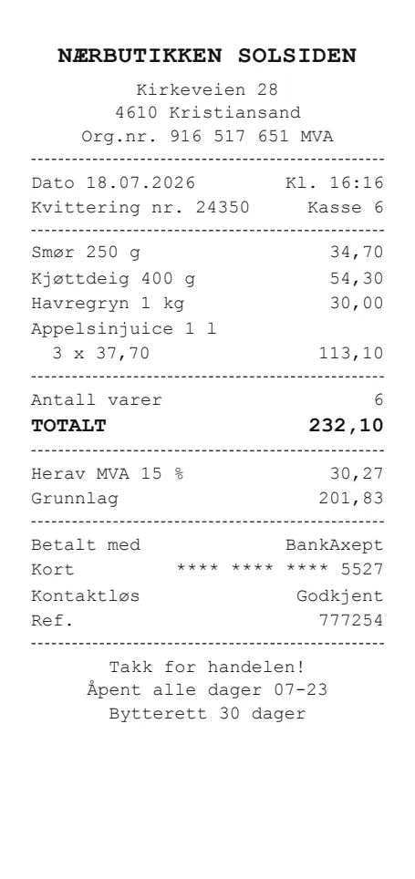
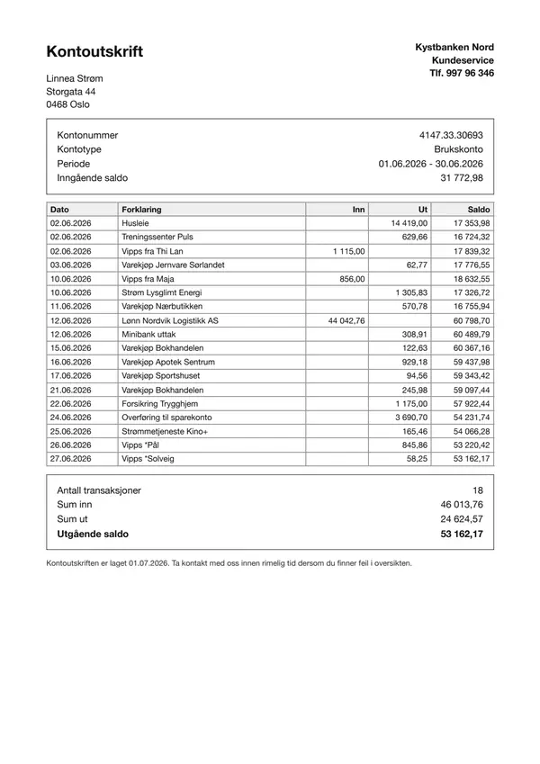
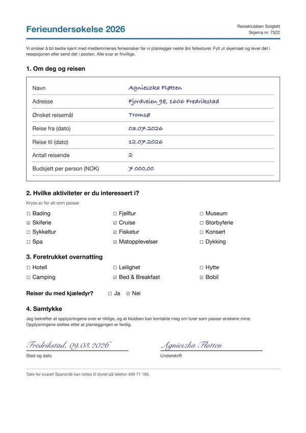
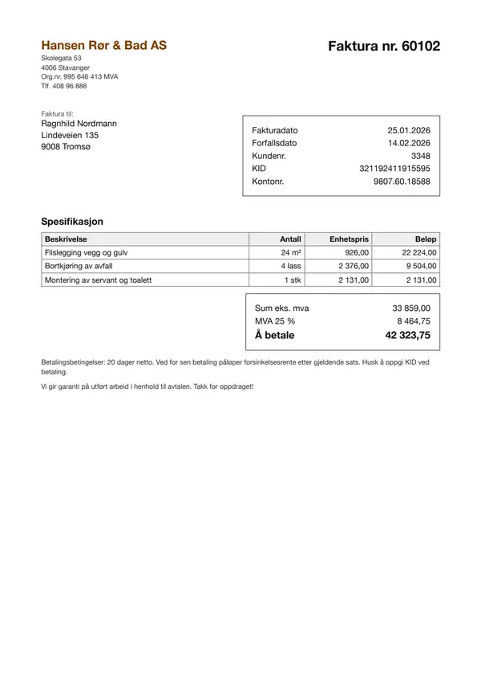
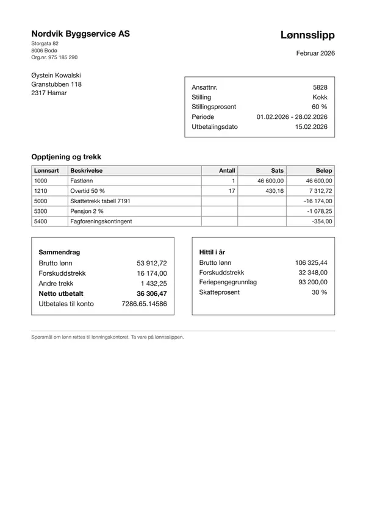

2026-10-15-dolphin-vs-claude55
ByteDance Dolphin-v2 (self-hosted on a GPU, in its one-pass mode for photographed pages) as a reader in front of Claude Sonnet 5.5, against Sonnet 5.5 reading the page images directly.
One experiment. New here? The main page explains what the benchmark does, what the pipelines and metrics mean, and the document types.
Key facts (computed, not LLM-written)
| question | clean pages | degraded pages |
|---|---|---|
| most accurate pipeline | page images → Claude Sonnet 5.5 (image->sonnet-5.5): 100.0% | page images → Claude Sonnet 5.5 (image->sonnet-5.5): 99.7% |
| cheapest pipeline | Dolphin-v2 text → Claude Sonnet 5.5 (dolphin-v2->sonnet-5.5): $6.45/1k docs | page images → Claude Sonnet 5.5 (image->sonnet-5.5): $4.14/1k docs |
| fastest pipeline | page images → Claude Sonnet 5.5 (image->sonnet-5.5): 2.3 s/doc | page images → Claude Sonnet 5.5 (image->sonnet-5.5): 1.6 s/doc |
Every pipeline (field accuracy, time per document, cost per 1,000 documents):
| pipeline | clean accuracy | degraded accuracy | s/doc (clean) | $/1k docs (clean) |
|---|---|---|---|---|
Dolphin-v2 text → Claude Sonnet 5.5 (dolphin-v2->sonnet-5.5) | 79.0% | 69.9% | 23.0 | $6.45 |
page images → Claude Sonnet 5.5 (image->sonnet-5.5) | 100.0% | 99.7% | 2.3 | $7.06 |
| reader | variant | CER median | number recall | invented numbers (excl. runaway) | runaway pages | pages at token limit |
|---|---|---|---|---|---|---|
dolphin-v2 | clean | 0.084 | 82.4% | 19 | 3 | 4 |
dolphin-v2 | degraded | 0.155 | 76.2% | 95 | 5 | 6 |
| reader | p50 s/page (one at a time) | max pages/min (at concurrency) |
|---|---|---|
dolphin-v2 | 10.8 | 25 (16) |
dolphin-v2 runs on its own GPU (ml.g5.xlarge), which costs $1.49/hour whether busy or idle; it handled at most ~1526 pages/hour in this run.
Pipeline costs that include dolphin-v2 use $0.98/1k pages: the cost at its best sustained throughput: 25.4 pages/min at concurrency 16 (GPU kept busy). One request at a time it would be $8.68/1k pages.
Fields missed most often (count over clean + degraded documents):
- Dolphin-v2 text → Claude Sonnet 5.5 (
dolphin-v2->sonnet-5.5):holiday_survey.activities(12),holiday_survey.accommodation(12),holiday_survey.pets(12),rental_contract.landlord(8) - page images → Claude Sonnet 5.5 (
image->sonnet-5.5):rental_contract.monthly_rent(1)
Recommendation
LLM comment by opus-5.5 (anthropic/claude-opus-5-5) on the computed key facts. Check the numbers against the tables below.
Bottom line
Choose image->sonnet-5.5: it is the most accurate pipeline on both clean (100.0%) and degraded (99.7%) pages and also the fastest. Sending page images straight to the extractor avoids the transcription errors that drag dolphin-v2->sonnet-5.5 down to 79.0% clean and 69.9% degraded.
What the facts say
- The accuracy gap comes from stage 1.
dolphin-v2transcripts have a CER median of 0.084 on clean pages and 0.155 on degraded ones. Number recall is only 82.4% clean and 76.2% degraded, so the extractor never sees much of the content. dolphin-v2invents content. It produced 95 invented numbers on degraded pages, against 19 on clean pages. It also had runaway pages (3 clean, 5 degraded) and pages hitting the token limit (4 clean, 6 degraded). This points to generation loops rather than simple misreads.- The misses cluster in specific fields.
holiday_survey.activities,holiday_survey.accommodationandholiday_survey.pets(12 each) suggest the transcript loses form structure such as checkboxes and layout.rental_contract.landlord(8) suggests it also drops some named parties.image->sonnet-5.5missed onlyrental_contract.monthly_rent(1). - Degraded photos hurt
dolphin-v2far more than they hurt the image pipeline, which barely moves. - Self-hosting does not help here. The two-step pipeline is slower (23.0 s/doc vs 2.3 s/doc clean). Its cost advantage on clean pages depends on keeping the GPU busy: one request at a time it rises to $8.68/1k pages, and the GPU costs $1.49/hour whether busy or idle.
Choice by goal
| goal | choice | why |
|---|---|---|
| highest accuracy | image->sonnet-5.5 | Most accurate on clean and degraded pages |
| lowest latency | image->sonnet-5.5 | Fastest: 2.3 s/doc clean, 1.6 s/doc degraded |
| lowest cost | dolphin-v2->sonnet-5.5 on clean pages ($6.45/1k docs); image->sonnet-5.5 on degraded pages ($4.14/1k docs) | The clean-page saving costs a large accuracy drop and assumes a saturated GPU, so image->sonnet-5.5 is the practical choice |
| checking / second opinion | image->sonnet-5.5 re-run or human review | dolphin-v2 transcripts invent numbers, so they are unreliable as a cross-check |
| self-host a model | Only with sustained high volume and a privacy need that rules out sending images | You must accept lower accuracy and keep the GPU at concurrency to hold cost down |
Caveats
- The 48 documents are synthetic and Norwegian, across 8 types. Real scans, other languages and other layouts may behave differently.
- Degradation is a simulated phone photo, not real capture noise.
- Only 1 self-hosted reader (
dolphin-v2@ c37c6276) was evaluated. Other OCR models or prompts could close the gap. - Cost figures for
dolphin-v2assume the best sustained throughput of 25.4 pages/min. Real utilisation will likely be lower, which raises the cost.
Setup
Models
| role | name in tables | model | model id | served by | temperature | price |
|---|---|---|---|---|---|---|
| transcriber (self-hosted) | dolphin-v2 | ByteDance/Dolphin-v2 @ c37c6276 | ByteDance/Dolphin-v2 | vLLM on SageMaker real-time endpoint (streamed) | 0 | $1.49/hour (on-demand) |
| extraction agent (default) | sonnet-4.5 | Claude Sonnet 4.5 (2025-09-29) | anthropic.claude-sonnet-4-5-20250929-v1:0 | OpenAI-compatible gateway | 0 | $3.0 in / $15.0 out per 1M tokens |
| extractor | sonnet-5.5 | Claude Sonnet 5.5 | anthropic.claude-sonnet-5-5 | OpenAI-compatible gateway | 1 | $2.0 in / $10.0 out per 1M tokens |
| recommendation writer | opus-5.5 | Claude Opus 5.5 | anthropic/claude-opus-5-5 | OpenAI-compatible gateway | 1 | $4.0 in / $20.0 out per 1M tokens |
The extraction agent
The agent (default extractor) is Claude Sonnet 4.5 (2025-09-29) (anthropic.claude-sonnet-4-5-20250929-v1:0), temperature 0. It gets the document type's field list (name, type, one-line description), plus either the page images (image->agent) or the text transcript of every page, in order (<transcriber>->agent), and returns one JSON object with the field values copied verbatim; max 2,048 output tokens. It never sees the ground truth. Pipelines that name another extractor (sonnet-5.5) use that model with the same input.
Models with temperature above 0 sample their output, so their results vary slightly between runs; differences of a point or two are within noise.
GPU
| instance | ml.g5.xlarge (picked from pools: ml.g6.xlarge, ml.g6e.xlarge, ml.g5.xlarge, ml.g5.2xlarge) |
| GPU | NVIDIA A10G, 24 GB |
| host | 4 vCPU, 16 GB RAM |
| price | $1.49/hour (on-demand), billed while the endpoint exists, busy or idle |
| region | eu-north-1 |
| host image | al2023-ami-sagemaker-inference-gpu-4-1 |
| container | docker.io/vllm/vllm-openai@sha256:b7a7be708c9a325107cdeddeba095e5637617716b3ab469c19d34759ec1afa39 (digest sha256:81db935a29e5) |
| serving flags | --max-model-len 16384 --max-num-seqs 32 --gpu-memory-utilization 0.90 --mm-processor-kwargs {"max_pixels": 1810000} |
| post-processing | none |
Run
| plan | dolphin-vs-claude55: ByteDance Dolphin-v2 (self-hosted on a GPU, in its one-pass mode for photographed pages) as a reader in front of Claude Sonnet 5.5, against Sonnet 5.5 reading the page images directly. (3 transcription runs) |
| documents | 48 documents, 54 pages, 108 page images (clean + degraded), seed 7 |
| runner | fargate (2048 CPU units / 4096 MB) |
| code | git 61b0b0a |
| started | 2026-10-15T16:20:36 |
Transcription runs in this plan:
dolphin-v2at concurrency 1dolphin-v2at concurrency 4dolphin-v2at concurrency 16
Results
Speed and cost (stage 1)
| Backend | Model | Conc. | Pages | OK | Errors | Wall (s) | Pages/min | p50 (s) | p95 (s) | max (s) | Prompt tok | Compl. tok | Retries | $/1k pages |
|---|---|---|---|---|---|---|---|---|---|---|---|---|---|---|
| dolphin-v2 | ByteDance/Dolphin-v2@sagemaker | 1 | 108 | 108 | 0 | 2259.64 | 2.9 | 10.79 | 125.80 | 127.24 | 1 613 | 1 341 | 0 | $8.68 |
| dolphin-v2 | ByteDance/Dolphin-v2@sagemaker | 4 | 108 | 108 | 0 | 646.10 | 10.0 | 12.73 | 150.35 | 153.63 | 1 613 | 1 275 | 0 | $2.48 |
| dolphin-v2 | ByteDance/Dolphin-v2@sagemaker | 16 | 108 | 108 | 0 | 254.83 | 25.4 | 14.68 | 164.25 | 177.42 | 1 613 | 1 201 | 0 | $0.98 |
Click a header to sort.
Transcription quality (stage 1)
| Backend | Variant | Pages | Coverage | CER mean | CER median | Runaway | Token limit | WER | Word recall | Word precision | Number recall | Numbers missing | Invented numbers |
|---|---|---|---|---|---|---|---|---|---|---|---|---|---|
| dolphin-v2 | clean | 54 | 100.0% | 0.186 | 0.084 | 3 | 4 | 0.279 | 75.6% | 82.2% | 82.4% | 301 | 20 |
| dolphin-v2 | degraded | 54 | 100.0% | 0.234 | 0.155 | 5 | 6 | 0.370 | 69.3% | 71.5% | 76.2% | 345 | 1 713 |
Click a header to sort.
Field extraction (stage 2)
| Input → extractor | Pipeline id | Variant | Docs | Coverage | Field accuracy | Correct | Total | Extractor latency (s) | End-to-end (s) | $/1k docs |
|---|---|---|---|---|---|---|---|---|---|---|
| Dolphin-v2 text → Claude Sonnet 5.5 | dolphin-v2->sonnet-5.5 | clean | 48 | 100.0% | 79.0% | 260 | 329 | 1.70 | 22.95 | $6.45 |
| Dolphin-v2 text → Claude Sonnet 5.5 | dolphin-v2->sonnet-5.5 | degraded | 48 | 100.0% | 69.9% | 230 | 329 | 1.90 | 27.72 | $7.66 |
| page images → Claude Sonnet 5.5 | image->sonnet-5.5 | clean | 48 | 100.0% | 100.0% | 329 | 329 | 2.34 | 2.34 | $7.06 |
| page images → Claude Sonnet 5.5 | image->sonnet-5.5 | degraded | 48 | 100.0% | 99.7% | 328 | 329 | 1.59 | 1.59 | $4.14 |
Highlighted: best value per column within each variant. Click a header to sort.
Documents (48)














